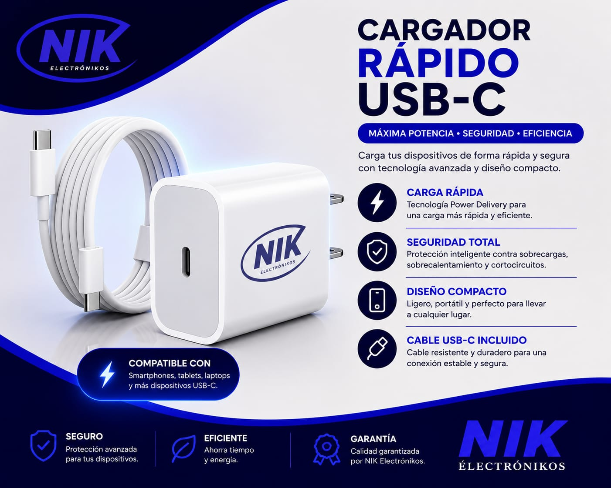

Computadores
Reparación, mantenimiento, limpieza y actualización.
Recuperamos computadores, celulares, televisores, consolas y dispositivos electrónicos con diagnóstico especializado, repuestos de calidad y garantía en cada reparación.

Diagnosticamos, reparamos y realizamos mantenimiento a una amplia variedad de dispositivos utilizando herramientas profesionales y repuestos de calidad.
Reparación, mantenimiento, limpieza y actualización.
Cambio de pantalla, batería, puertos y software.
Diagnóstico electrónico y reparación especializada.
PlayStation, Xbox, Nintendo y más.
Pantallas, baterías y problemas de carga.
Limpieza interna, optimización y prevención.
Más de una década ofreciendo soluciones profesionales para equipos electrónicos de diferentes marcas.
Años de experiencia
Equipos reparados
Garantía en el servicio
Respuesta rápida

En NIK Electronikos trabajamos con equipos de diagnóstico, herramientas especializadas y procesos que garantizan un servicio confiable para cada cliente.
Personal con experiencia en múltiples marcas.
Respaldamos cada servicio realizado.
Diagnósticos precisos y reparaciones seguras.
Reducimos los tiempos de espera al máximo.
Descubre algunos de nuestros trabajos, procesos de reparación y consejos para mantener tus equipos en perfecto estado.
Mira el proceso completo de reparación realizado por nuestro laboratorio técnico.
Limpieza y mantenimiento profesional de computadores.
Detectamos la falla antes de iniciar cualquier reparación.
Reparamos equipos de diferentes fabricantes utilizando procedimientos profesionales y repuestos de calidad.
También contamos con una amplia variedad de productos para computadores, celulares y equipos electrónicos.





Escríbenos por WhatsApp y recibe un diagnóstico profesional para tu computador, celular, televisor o cualquier equipo electrónico.